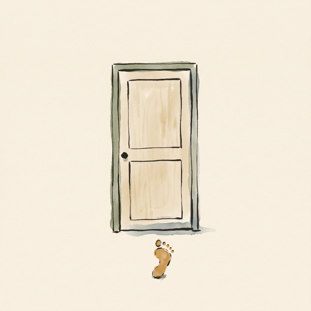

Press kit
Onward: One Vow
Download everything (ZIP, 10.8 MB)
The icon, the header artwork, four screenshots and these facts. You may use them to write about Onward.
Facts
- Name
- Onward: One Vow
- Made by
- Two people in Surat, India
- Platform
- iPhone, iOS 17 or later
- Released
- October 2026
- Price
- Free to download. Walking is free for as long as you walk, and so is the first place with its gift. One in-app purchase, made once, opens the eleven places after the first, for every journey: $9.99 in the US, ₹999 in India; prices vary by country. No subscription.
- Privacy
- No account, no server, no tracking. App Store privacy label: Data Not Collected. Everything the walker writes is encrypted on the phone.
- App Store
- apps.apple.com/app/id6825297435
- Contact
- Show the email address
In one line
Onward is a quiet iPhone app for one long commitment: a vow to walk toward something larger than yourself, one honest step a day.
In a few paragraphs
Onward is a quiet iPhone app for one long commitment: a vow to walk toward something larger than yourself, one honest step a day. It is built on sankalp, the Sanskrit idea of turning your whole being toward one thing.
It is not a habit tracker. There are no streaks, no shame and no nagging. Before you begin, Onward asks what will trouble you, including the lie you will tell yourself when you want to quit. On hard days it returns you to your own words instead of motivating you. Each day you hold one button to take your step; the path is drawn behind you in ink and watercolour, and at twelve places across a year you arrive somewhere and receive a small gift with a short story.
Onward is made by two people in Surat, India. It has one purchase, no subscription, no account and no server, and everything you write is encrypted on your phone.
Images
Each image opens at full size.